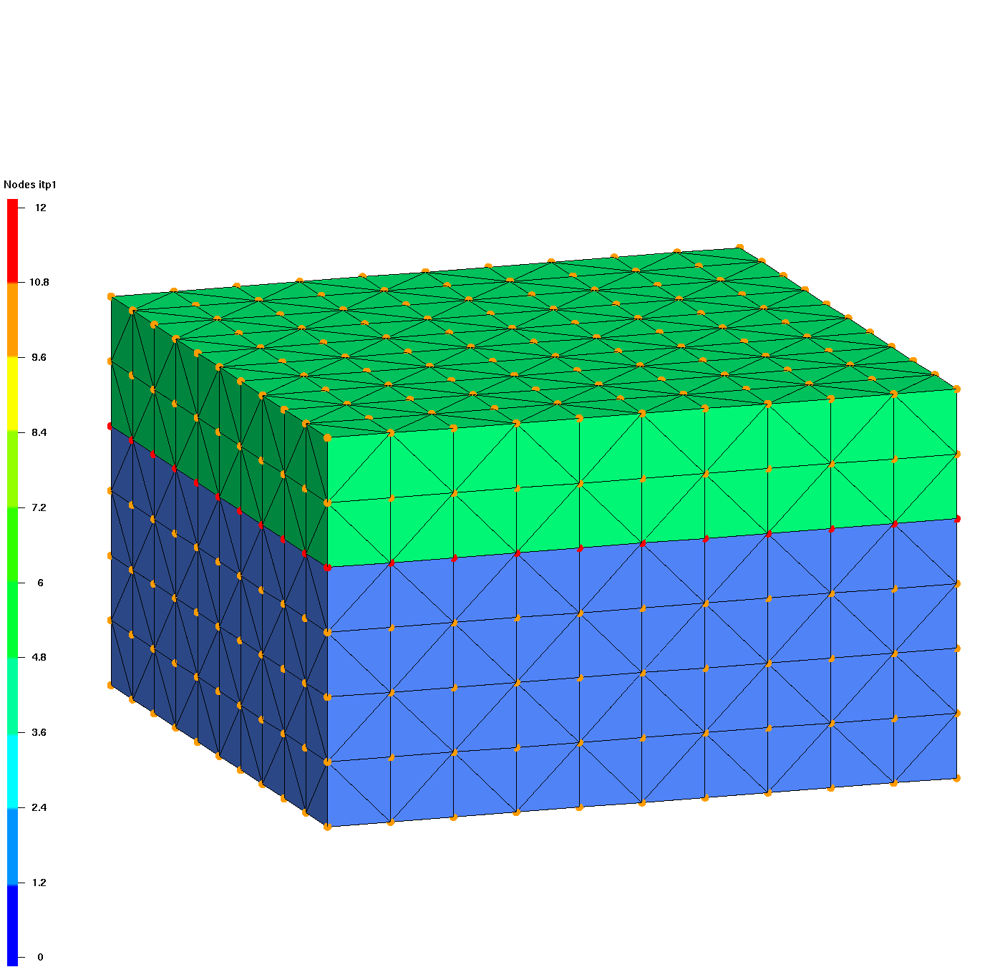
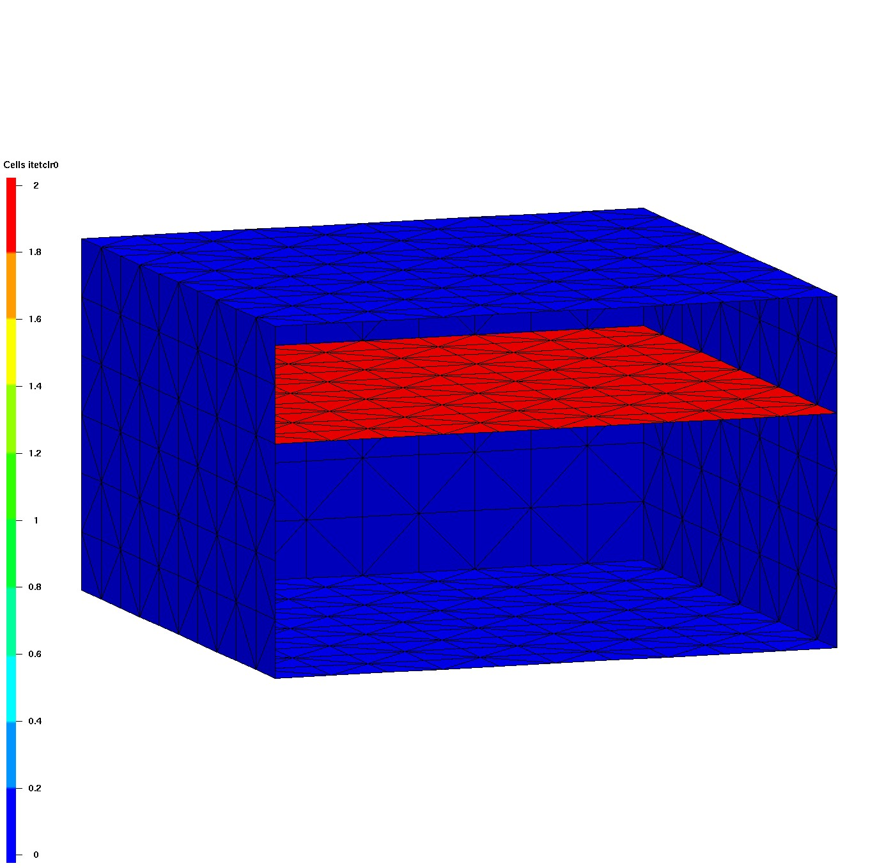
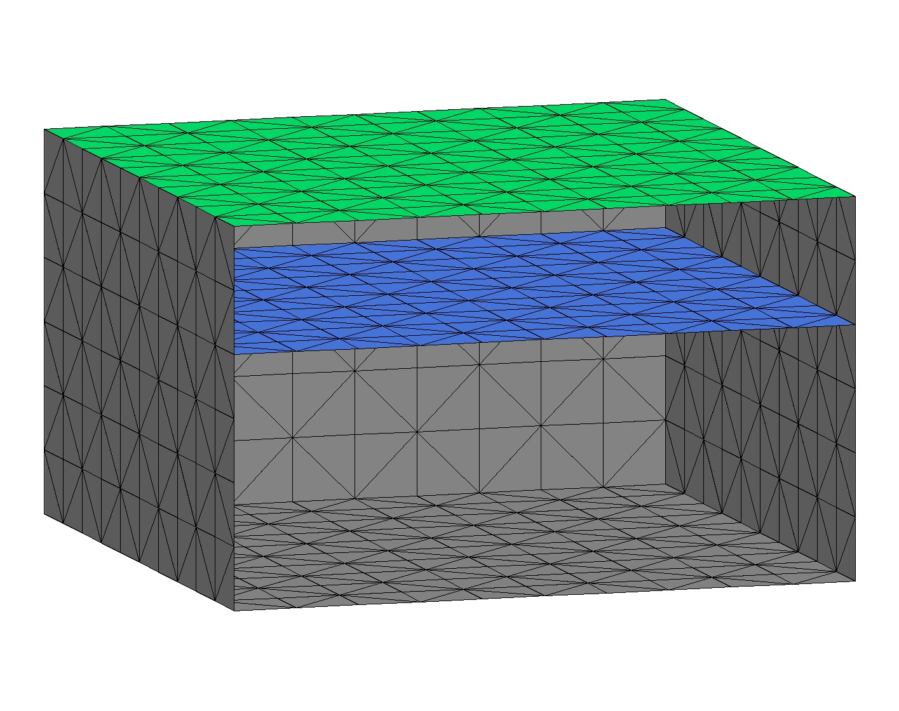
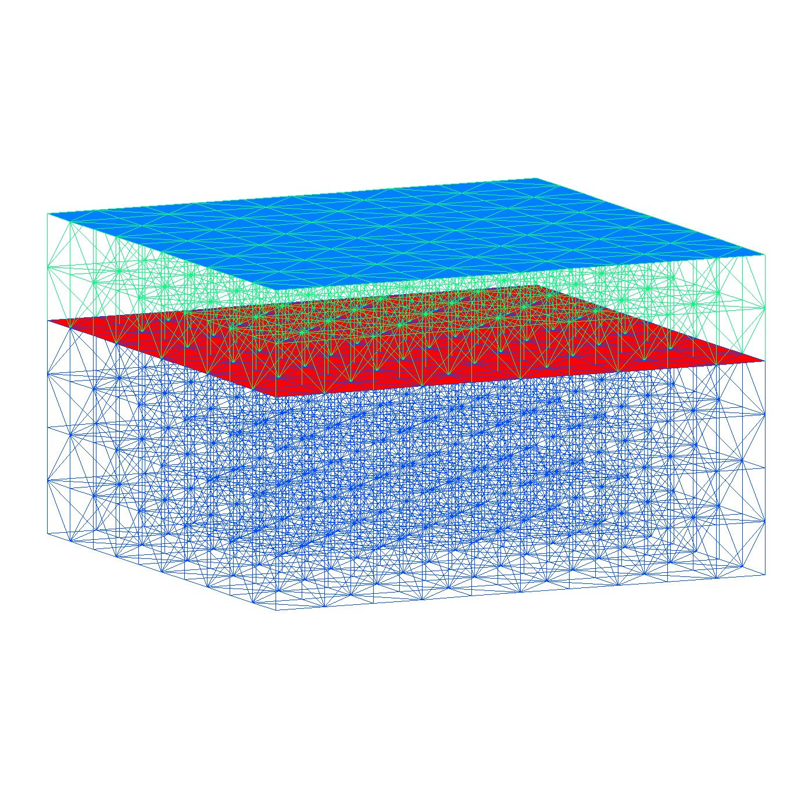
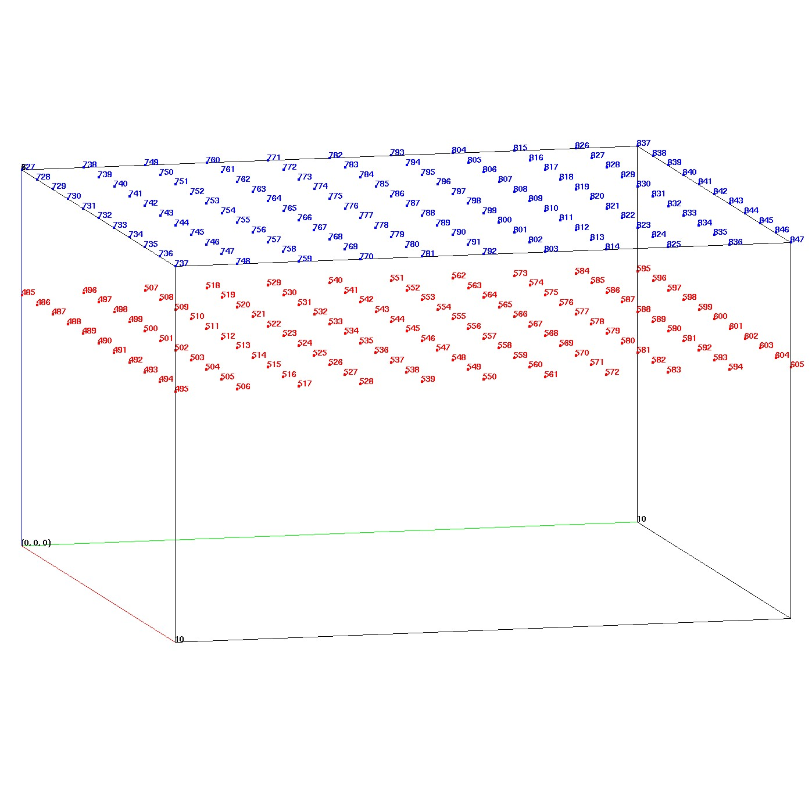

This example shows how extract/surfmesh can be used to write boundary face and node information. This is the method used to add facesets (side sets) that are added to an ExodusII mesh file. This information can also be read and parsed for used for modeling application for boundary conditions in FEHM and PFLOTRAN.
Note it is very important that you use the master source mesh to extract node and element numbers. If you subset or change the master mesh, the node and element numbers might change and your face and node list will not be valid.
This Demo shows how to
CREATEPTS/BRICK.PSET WRITE and ZONE.EXTRACT_SURFMESH.DUMP EXO and DUMP AVS.Click on images to enlarge.
| Master Tet Mesh | Extracted Surfmesh | Colored Surfmesh |
|---|---|---|
|  |  |  |
| Create hex mesh with 2 materials and one interface. Set mesh object itp array to tag boundary and interface nodes. |
Extract surface representing faces on the boundary and the interface. Surfmesh itetclr0 is used to select the interface. |
Color the surfmesh with desired subsets, interface (blue) and top (green). |
| Output Face Sets | Output Node Sets |
|---|---|
|  |  |
| Output face sets for top and interface | Output nodes for top and interface (node numbers shown in image) |
LaGriT command file for Demo: write_face_node_sets.lgi.txt
LaGriT output report for Demo: write_face_node_sets.out.txt
This Demo will write the following files:
head ZONN file top_nodes.zonn:
zonn
000001 TOP_NODES
nnum
121
727 728 729 730 731 732 733 734 735 736
737 738 739 740 741 742 743 744 745 746
head PSET file top_nodes.vertexset:
pset ascii 1
TOP_NODES 1 121
727 728 729 730 731 732 733 734 735 736
737 738 739 740 741 742 743 744 745 746
head AVS node attribute file top_nodes.dat:
0 0 1 0 0
00001 1
id_node, integer
1 486
2 496
3 485
4 497
5 487
head AVS element attribute file top.faceset:
0 0 0 2 0
00002 1 1
idelem1, integer
idface1, integer
1503 2
1504 2
1508 2
1509 2
{kind=link}
{kind=link}
{kind=link}
{kind=link}
{kind=link}